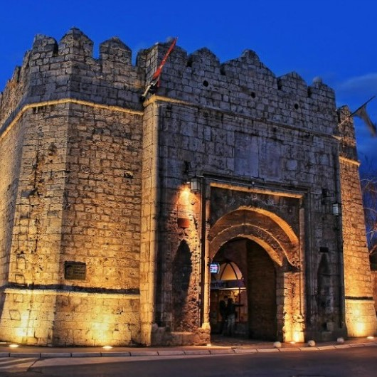
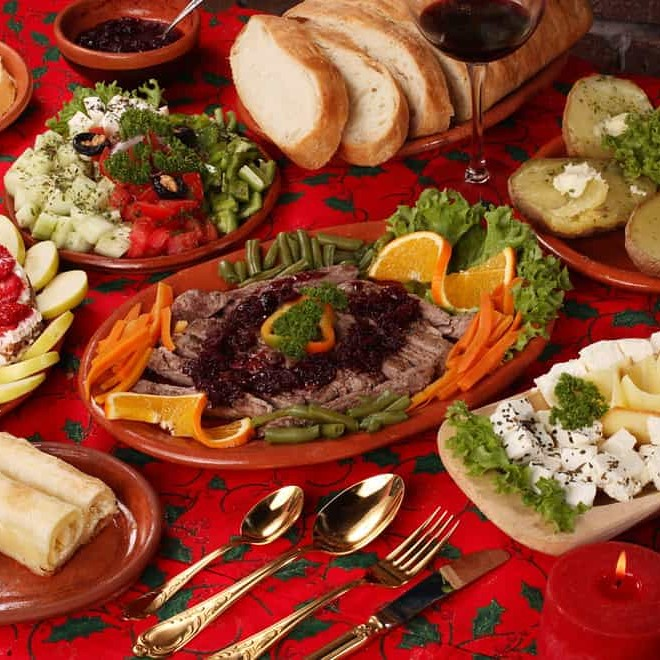
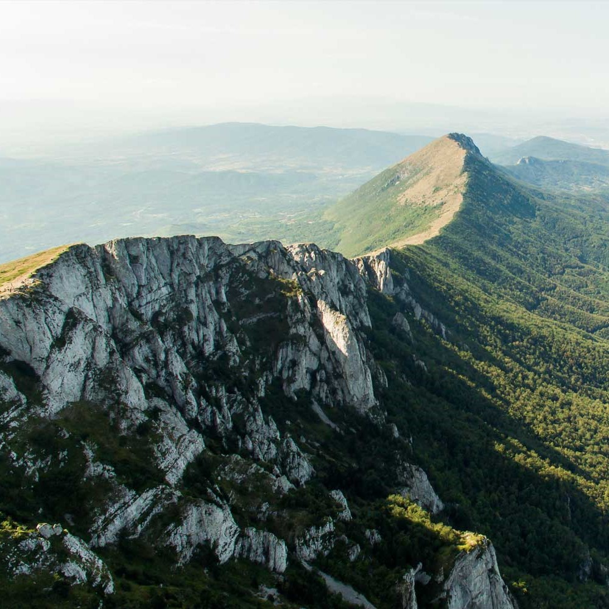

Top activities to do in Niš

Visit historical monuments and attractions
From the Paleolithic all the way to the World War II, you'll be able to see attractions from all of history. The Archaeological Hall, Skull Tower, The Niš Fortress, The Red Cross Concentration camp etc

Try delicious food
Niš food is a great combination of Serbian traditional dishes and influence from Turkish cuisine. Pljeskavica, ćevapčići, burek, sarma etc

Visit gorgeous nature in the city's vicinity
If you wish to get away from the city's noise and crowd, you can visit numerous natural attractions in city's vicinity. Suva Mountain, Sićevo gorge, Cerje cave etc.